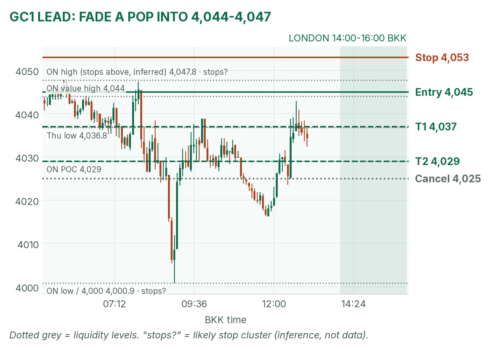
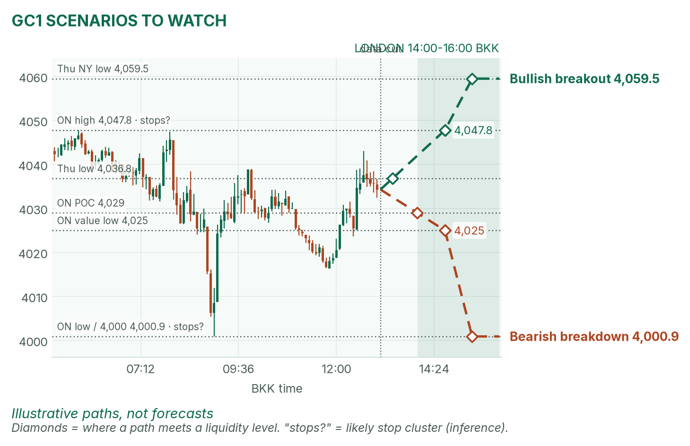
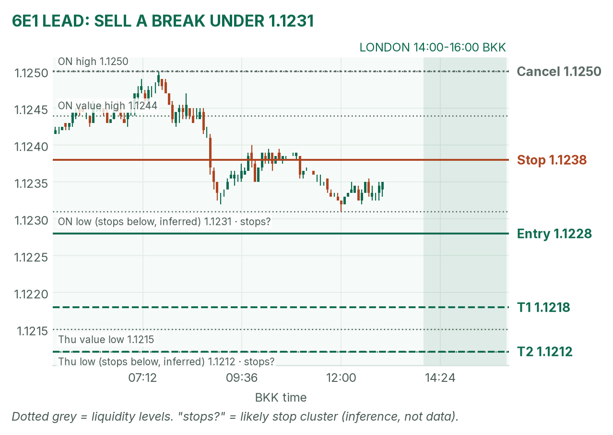
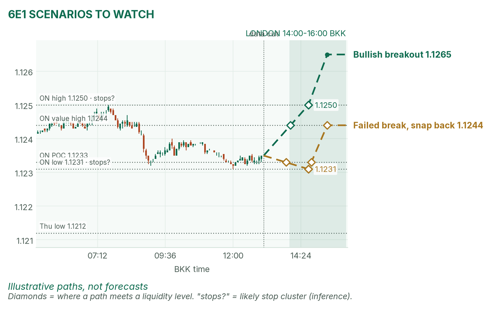

Gold bounced off 4,000. The euro is coiled before the PMIs.
Window 14:00–16:00 BKK, London's first two hours. Data cut 13:05 BKK: GC 4,034.3, 6E 1.1235 (TopstepX Z26, last complete 5m bar). Levels only. Ideas, not advice.
Summary
GC: fade a pop into 4,044–4,047 that fails. Stop 4,053, target 4,029 (2R). About 40%.
6E: sell a 5-minute close under the 14:00–14:30 range low and 1.1231. Stop 1.1238, target 1.1212 (1.6R). About 38%.
Four flash PMIs land inside the window (14:15, 14:30, 15:00, 15:30). No entries from 5 minutes before to 2 minutes after each.
Flat by 16:00, no matter what.
The market story
Thursday was an AI scare: Nasdaq futures fell 2.9% and money ran into Treasuries. The 10-year yield fell about 19 basis points, its biggest drop since March 2023. Lower yields usually help gold, which pays no interest. But Brent oil near $114 keeps rate-hike fears alive, and gold fell 2.2% anyway. Overnight it flushed to 4,000.9 at 09:00, then climbed back to 4,034. That bounce is a mean reversion (price snapping back toward its busiest level) inside a downtrend: 4,206 to 4,034 in six sessions.
The euro barely moved: an overnight range of 19 pips, 1.1231–1.1250, inside a two-week 1.122–1.127 box. The dollar is firming a touch, and France waits on Moody's after the US close.
How I read it: gold is a downtrend that has bounced into a ceiling; the euro is a coiled spring waiting for the PMIs.
News (BKK)
Time
Event
Forecast
Prior
Read
13:00
UK retail sales, Sep (m/m)
−0.2%
+0.5%
Before the window. Print not checked.
14:15–14:30
France and Germany flash PMIs
n/a
n/a
Forecasts not confirmed in my sources.
15:00
Euro area flash composite PMI
52.7
53.1
Hot (above 53) lifts 6E; cold (below 52) helps the short.
15:30
UK flash PMIs
n/a
n/a
A pound story.
No-trade zones: 14:10–14:17, 14:25–14:32, 14:55–15:02, 15:25–15:32. PMIs are fast business surveys; above 50 means growth.
Levels to watch
Level
GC
6E
Overnight high
4,047.8
1.1250
Overnight value area
4,025–4,044
1.1231–1.1244
Overnight POC (busiest price)
4,029
1.1233
Overnight low
4,000.9
1.1231
Thursday high / low
4,164.3 / 4,036.8
1.12795 / 1.1212
Thursday POC
4,106
1.1229
Typical window range (median / 80th pct, 20 days)
18 / 24 pts
19 / 31 pips
Gold (GC1)
Bias: bearish, but price sits mid-range. My London gold rule fades the edges of the 14:00–14:30 range back to the POC. The top edge meets the overnight highs, so that's my side.
The trade: fade a failed pop
Entry
4,044–4,047 (plan 4,045): a pop to the overnight value high that closes back below 4,044 on 5 minutes
Stop
4,053: above the overnight high (4,047.8), where buy stops likely sit (an inference)
Targets
1R partial 4,037 (Thursday's low, 4,036.8) · full target 4,029, the overnight POC (2.0R)
Cancel
Price trades 4,025 before entry, a 15m close above 4,048, or no pop by 15:15
Probability
~40%, an estimate. Basis: London gold ranges mostly failed in my Aug–Oct study (not significant); the stop is 1.5 five-minute ATRs (average bar size, 5.4 pts), and 16 points to target is close to a full typical window.
Why: sell where the rally ran out, with the trend. No pop, no trade. I won't short 4,034 in the middle. April agrees: she calls gold the weak one, with oil keeping rate fears alive.

GC 5-minute bars to 13:05 BKK, window shaded. The 4,000.9 flush and the 4,044–4,048 ceiling frame the day.

Illustrative paths, not forecasts: the other two setups at the liquidity levels.
Scenarios to watch
Bearish breakdown: a 15m close below 4,025 (overnight value low). Aims for 4,000.9 and the round 4,000.
Bullish breakout: two 15m closes above 4,047.8 run the stops. Aims for 4,059.5, Thursday's NY-window low.
Euro (6E1)
Bias: mildly bearish. Firmer dollar, softer PMI forecast, French weekend risk. My London rule for 6E is to trade breaks of the 14:00–14:30 range.
The trade: bearish range breakdown
Entry
1.1226–1.1229 (plan 1.1228), on a 5m close below the 14:00–14:30 range low and the overnight low (1.1231)
Stop
1.1238: back inside the overnight value area, above its POC (1.1233)
Targets
1R partial 1.1218 · full target 1.1212, Thursday's low (1.6R)
Cancel
Price trades 1.1250 before entry, the 30m range low sits under 1.1225, or the break comes inside a no-trade zone
Probability
~38%, an estimate. Basis: euro London breakouts averaged +0.31R in my study (26 sessions, not significant); 16 pips to target is about a typical window.
Why: stops pile under a tight range, and a break feeds itself. April half-agrees: dollar firming and French stress fit, but she frames it as a range until the PMIs speak. If the 15:00 PMI prints hot, stand aside.

6E 5-minute bars to 13:05 BKK. A 19-pip overnight box; the trigger sits under its floor.

Illustrative paths, not forecasts: breakout and snap-back.
Scenarios to watch
Bullish breakout: a 5m close above the range high and 1.1250 on a hot PMI. Aims for about 1.1265.
Failed break, snap back: a poke under 1.1231 that closes back above it within 15 minutes. Aims for 1.1244.
NQ (not traded in London): 29,145, flat, between the overnight low 29,022.75 and high 29,212.50.
Before you click
ORB bases. GC London: 14:00–14:30 range, fade to POC. 6E London: 14:00–14:30 range, trade breakouts.
Checklist. 1) Room to today's max loss? 2) Within daily rules? 3) No release within 30 minutes? 4) Agrees with the bias? 5) At a marked level? 6) Setup tagged? 7) Entry, stop, 1R partial, target set? 8) Calm, not chasing?
Reset (60 seconds). Breathe in 4, hold 4, out 6, five times. Name the feeling in one word. Say the plan aloud. "Eager" or "frustrated"? Wait 5 minutes.